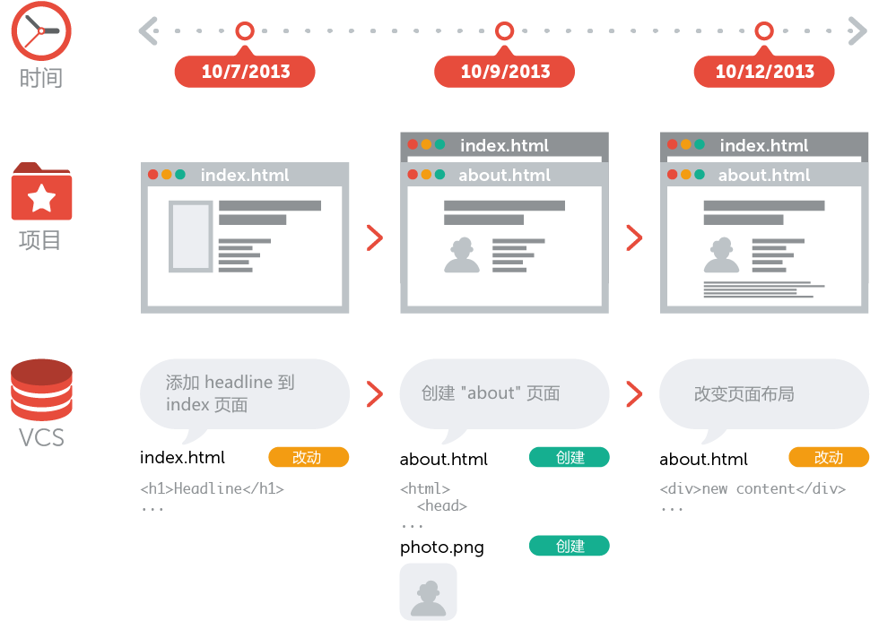
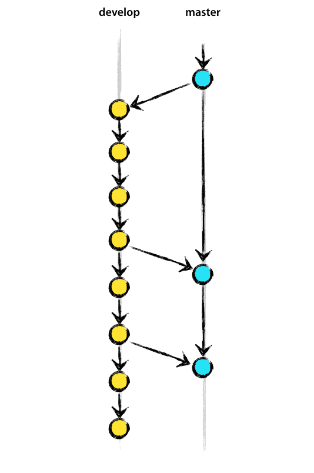
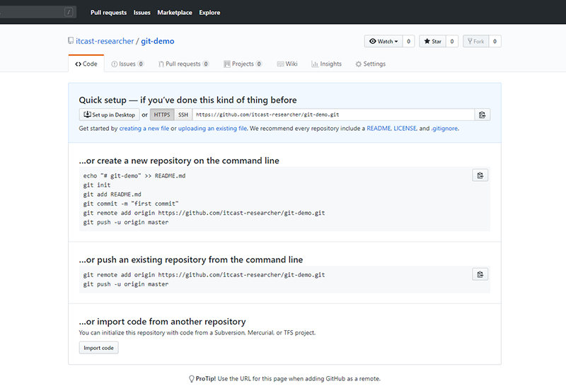
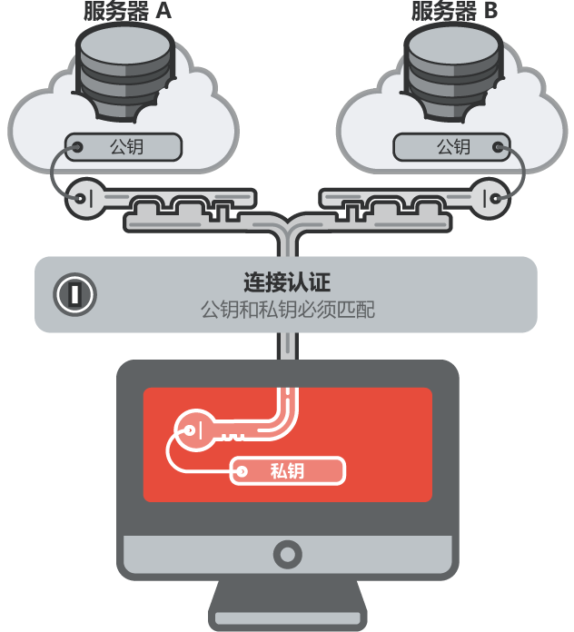

1. Git基础
1.1 版本管理
1.1.1 什么是版本管理
版本管理是一种记录文件变化的方式，以便将来查阅特定版本的文件内容。
1.1.2 人为维护文档版本的问题
- 文档数量多且命名不清晰导致文档版本混乱
- 每次编辑文档需要复制，不方便
- 多人同时编辑同一个文档，容易产生覆盖
1.2 Git 是什么
Git是一个版本管理控制系统（缩写VCS），它可以在任何时间点，将文档的状态作为更新记录保存起来，也可以在任何时间点，将更新记录恢复回来。
1.3 Git 安装
在安装的过程中，所有选项使用默认值即可。
1.4 Git 基本工作流程
| git仓库 | 暂存区 | 工作目录 |
|---|---|---|
| 用于存放提交记录 | 临时存放被修改文件 | 被Git管理的项目目录 |

1.5 Git 的使用
1.5.1 Git 使用前配置
在使用 git 前，需要告诉 git 你是谁，在向 git 仓库中提交时需要用到。
- 配置提交人姓名：
git config --global user.name 提交人姓名 - 配置提交人姓名：
git config --global user.email 提交人邮箱 - 查看git配置信息：
git config --list
注意
- 如果要对配置信息进行修改，重复上述命令即可。
- 配置只需要执行一次。
1.5.2 提交步骤
git init初始化git仓库git status查看文件状态git add 文件列表追踪文件git commit -m 提交信息向仓库中提交代码git log查看提交记录
1.5.3 撤销
- 用暂存区中的文件覆盖工作目录中的文件：
git checkout 文件 - 将文件从暂存区中删除：
git rm --cached 文件 - 将 git 仓库中指定的更新记录恢复出来，并且覆盖暂存区和工作目录：
git rest --hard commitID

2. Git进阶
2.1 分支
为了便于理解，大家暂时可以认为分支就是当前工作目录中代码的一份副本。
使用分支，可以让我们从开发主线上分离出来，以免影响开发主线。

2.1.1 分支细分
主分支（master）：第一次向 git 仓库中提交更新记录时自动产生的一个分支。

、开发分支（develop）：作为开发的分支，基于 master 分支创建。
功能分支（feature）：作为开发具体功能的分支，基于开发分支创建

功能分支 -> 开发分支 -> 主分支
2.1.2 分支命令
git branch查看分支git branch 分支名称创建分支git checkout 分支名称切换分支git merge 来源分支合并分支git branch -d 分支名称删除分支（分支被合并后才允许删除）（-D 强制删除）
2.2 暂时保存更改
在git中，可以暂时提取分支上所有的改动并存储，让开发人员得到一个干净的工作副本，临时转向其他工作。
使用场景：分支临时切换
- 存储临时改动：
git stash - 恢复改动：
git stash pop
3. Github
在版本控制系统中，大约90%的操作都是在本地仓库中进行的：暂存，提交，查看状态或者历史记录等等。除此之外，如果仅仅只有你一个人在这个项目里工作，你永远没有机会需要设置一个远程仓库。
只有当你需要和你的开发团队共享数据时，设置一个远程仓库才有意义。你可以把它想象成一个 “文件管理服务器”，利用这个服务器可以与开发团队的其他成员进行数据交换。
3.1 注册
访问github首页，点击 Sign up 连接。（注册）

填写用户名、邮箱地址、GitHub登陆密码

选择计划

填写 GitHub 问题
验证邮箱

GitHub 个人中心

3.2 多人协作开发流程
- A在自己的计算机中创建本地仓库
- A在github中创建远程仓库
- A将本地仓库推送到远程仓库
- B克隆远程仓库到本地进行开发
- B将本地仓库中开发的内容推送到远程仓库
- A将远程仓库中的最新内容拉去到本地

3.3 创建仓库
填写仓库基本信息

将本地仓库推送到远程仓库
- git push 远程仓库地址 分支名称
- git push 远程仓库地址别名 分支名称
- git push -u 远程仓库地址别名 分支名称
-u 记住推送地址及分支，下次推送只需要输入git push即可 - git remote add 远程仓库地址别名 远程仓库地址
3.4 拉取操作
3.4.1 克隆仓库
克隆远端数据仓库到本地：git clone 仓库地址
3.4.2 拉取远程仓库中最新的版本
拉取远程仓库中最新的版本：git pull 远程仓库地址 分支名称
3.5 解决冲突
在多人同时开发一个项目时，如果两个人修改了同一个文件的同一个地方，就会发生冲突。冲突需要人为解决。
3.6 跨团队协作
- 程序员 C fork仓库
- 程序员 C 将仓库克隆在本地进行修改
- 程序员 C 将仓库推送到远程
- 程序员 C 发起pull reqest
- 原仓库作者审核
- 原仓库作者合并代码
3.7 ssh免登陆
https协议仓库地址：https://github.com/itcast-frontEnd/git-demo.git
生成秘钥：ssh-keygen
秘钥存储目录：C:\Users\用户\.ssh
公钥名称：id_rsa.pub
私钥名称：id_rsa


3.8 GIT忽略清单
将不需要被git管理的文件名字添加到此文件中，在执行git命令的时候，git就会忽略这些文件。
git忽略清单文件名称：.gitignore
将工作目录中的文件全部添加到暂存区：git add .